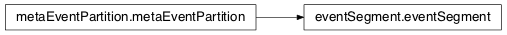

10.1.5. Event Partition and Segment¶
10.1.5.1. mosaic.eventSegment module¶

Partition a trajectory into individual events and pass each event to an implementation of eventProcessor
| Created: | 7/17/2012 |
|---|---|
| Author: | Arvind Balijepalli <arvind.balijepalli@nist.gov> |
| License: | See LICENSE.TXT |
| ChangeLog: |
- class mosaic.eventSegment.eventSegment(trajDataObj, eventProcHnd, eventPartitionSettings, eventProcSettings, settingsString)[source]¶
Bases: mosaic.metaEventPartition.metaEventPartition
Implement an event partitioning algorithm by sub-classing the metaEventPartition class
Settings: In addition to the parameters described in metaEventPartition, the following parameters from are read from the settings file (.settings in the data path or current working directory):
- blockSizeSec : Functions that perform block processing use this value to set the size of
their windows in seconds. For example, open channel conductance is processed for windows with a size specified by this parameter. (default: 1 second)
eventPad : Number of points to include before and after a detected event. (default: 500)
minEventLength : Minimum number points in the blocked state to qualify as an event (default: 5)
- eventThreshold : Threshold, number of SD away from the open channel mean. If the abs(curr) is less
than ‘abs(mean)-(eventThreshold*SD)’ a new event is registered (default: 6)
- driftThreshold : Trigger a drift warning when the mean open channel current deviates by ‘driftThreshold’*
SD from the baseline open channel current (default: 2)
- maxDriftRate : Trigger a warning when the open channel conductance changes at a rate faster
than that specified. (default: 2 pA/s)
- meanOpenCurr : Explicitly set mean open channel current. (pA) (default: -1, to
calculate automatically)
- sdOpenCurr : Explicitly set open channel current SD. (pA) (default: -1, to
calculate automatically)
- slopeOpenCurr : Explicitly set open channel current slope. (default: -1, to
calculate automatically)